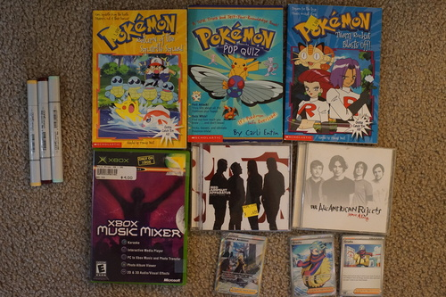
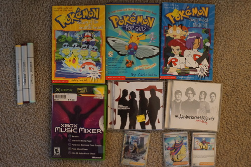

I did a bit of binge sewing lately. I intended to make Verona some tiny shorts, but they weren't small enough so Liam got them instead. I made a bat wing collared blouse for Volta. Nofoto. My pride and joy for the last couple days has been Grassy's new sailor top. He's so cute!!!!


SEE YOU idiot bastard
 

From Michael's. Y32, RV69, BG11
Didn't we just... This one has cool art though!
I still don't drink but it would be inappropriate to drink from a woodstock anyway.
Inside the case for PS1 Sim City 2000
I only have 2 (two) G2 ponies and they're a duplicate. I seriously have no idea how I only have 2 (now 3).
There was another G1 pony as well. It was a 2018 reproduction, so I skipped it. This one is labeled 85.
Inside the case for DDR Disney Channel Edition.
I don't know how often you all are googling for photos of musicians, but every time I do a search, I find a bunch of photos of old men. I quit using google as a main search engine for a reason I can't remember and started using Duck Duck Go. Duck Duck Go gives worse results, but it's easier to download the image than on Google. But tbh, both are terrible for this purpose.
I discovered something I didn't expect. Pinterest is legitimately very good at serving related photos. I'm not sure how either, because the tags are all wrong and half the images have sources that are discord links. Maybe based off uploaders and pinned folders? Bummers: Can't download without viewing source, no idea who any of these guys are, and and a ton of SIGN IN WITH GOOGLE crap. It's worth it because where else am I going to find young beautiful men in the 80s and 90s? Please tell me if you know of anywhere else.